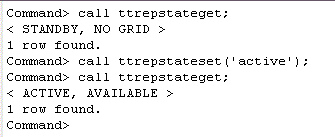
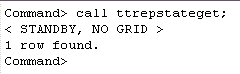

This section describes how to perform a failover to the standby database after a failure on the active database or server. This includes how to rebuild the previous active database from a standby database.
This tutorial uses the DSNs repdb1_1211 and repdb2_1211. The hostnames of the two machines are tthost1 and tthost2. repdb1_1211 was the active database on tthost1, and in this section, repdb2_1211 on tthost2 will be converted to become the new active database.
1. Stop the replication agent on the failed active database2. Set the state of the standby database to active
Stop the replication agent on the failed database, if it has not already been stopped.
Log in to server 1 (tthost1) as the instance administrator, and use the ttAdmin utility to stop replication agent on repdb1_1211.
ttadmin -repstop repdb1_1211
3. Mark the previous active database as failed
Using ttIsql, connect to the database repdb2_1211 on tthost2 as the replication administrator adm.
ttisql
connect "dsn=repdb2_1211;uid=adm";
Use the built-in procedure ttRepStateSet to designate the current database as the new active database in the active standby pair. Afterwards, verify the current replication state by calling the built-in procedure ttRepStateGet.
call ttrepstateset('active');
call ttrepstateget;
Once the database has entered the active state, it has been converted to an active database. Applications that were previously connected to the failed database can now be diverted to the new active database. See the section on Replication failover and recovery for more information.
4. Destroy the failed database
Still logged in as adm in tthost2, use the procedure ttRepStateSave to register the former active database as failed.
call ttrepstatesave ('failed','repdb1_1211','tthost1');
5. Duplicate the new active database to create a new standby database
Log in as the instance administrator on server 1 (tthost1), use the ttDestroy utility to remove the failed database repdb1_1211.
ttdestroy repdb1_1211
6. Start the Replication Agent on the Standby Database
Use the utility ttRepAdmin to create the standby database by duplicating from the new active database.
ttrepadmin -duplicate -from repdb2_1211 -host "tthost2" -uid adm -pwd adm "dsn=repdb1_1211"
Using ttIsql, connect to repdb1_1211 as the replication administrator adm. Call the built-in procedure ttRepStart to start the replication agent.
ttisql
connect "dsn=repdb1_1211;uid=adm";
call ttrepstart;
Verify that the standby database has entered the standby state by using the ttRepStateGet built-in procedure.
call ttrepstateget;

Once the old active (now new standby) database has entered the "standby" state, the configuration of an active standby pair is completed. Changes to the data in the new active database will be automatically replicated to the new standby database.
For more information about Recovering from a Failure on the Active Database refer to the documentation here